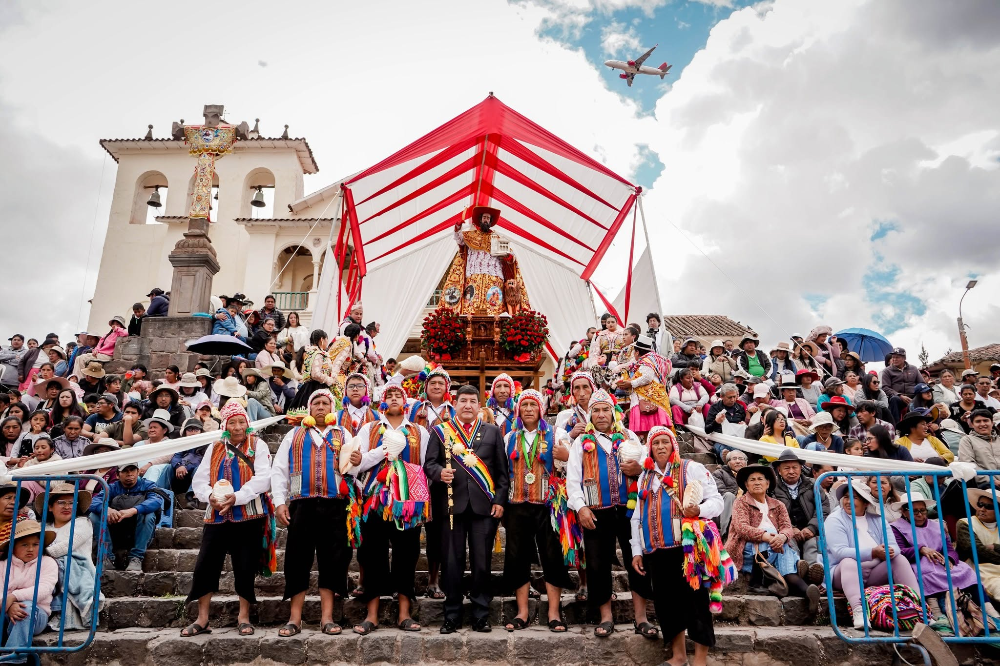
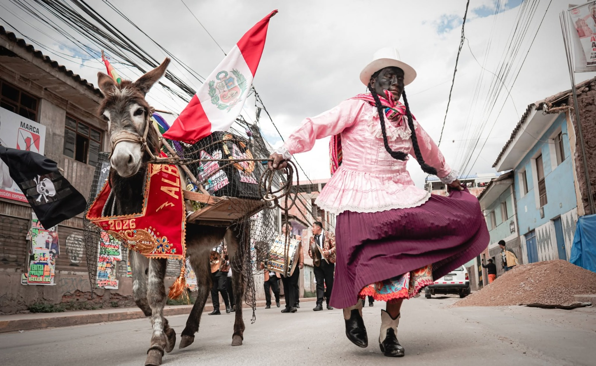
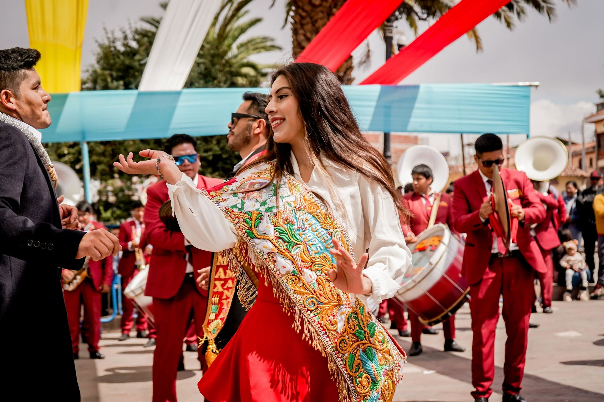
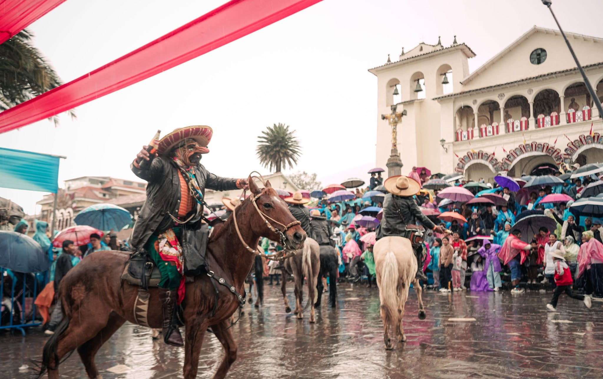
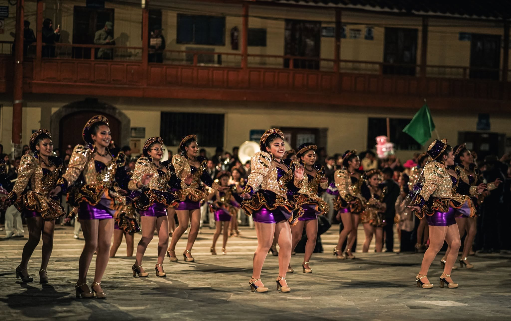
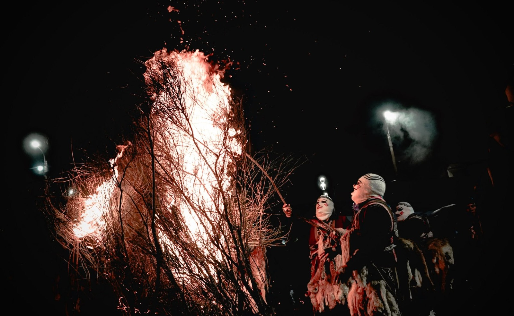

Recepción e inscripción de participantes
Equipo de la Gerencia de Desarrollo Social
 Municipalidad Distrital de San Jerónimo
Municipalidad Distrital de San Jerónimo

21 Y 22 DE SETIEMBRE DE 2026 · AUDITORIO MUNICIPAL

El Primer Encuentro de Identidad Cultural "Cátedra San Jerónimo" nace para revalorar nuestra memoria colectiva: de los ayllus y comunidades campesinas al San Jerónimo de hoy, bajo la sombra del apu Pachatusan y la fe del Apóstol San Jerónimo.
Historiadores, arqueólogos, antropólogos y comunicadores compartirán ponencias sobre nuestra historia, personajes, territorio y expresiones culturales. El cierre incluirá la entrega de certificados a los asistentes y la presentación de un libro sobre el patrimonio del distrito.
Dirigido a estudiantes, docentes, profesionales, autoridades y público en general.

"Memoria, fe e identidad: tres pilares que sostienen la historia viva del pueblo jeronimiano." — Primer Encuentro de Identidad Cultural "Cátedra San Jerónimo"

Auditorio de la Municipalidad Distrital de San Jerónimo — Lunes 21 y martes 22 de setiembre — 3:00 p. m.
Equipo de la Gerencia de Desarrollo Social
Prof. Máximo Rimachi Morales — Alcalde de la Municipalidad Distrital de San Jerónimo
Prof. Henry Castillo — Presidente de la ADAFOSAJ
Lic. Yesica Atayupanqui Ttito — Regidora de la Municipalidad Distrital de San Jerónimo
Historiador Alex Iván Usca Baca
Lic. Raúl Asencio Carrasco
Arqueólogo Irwin Antonio Ferrandiz Castro
Lic. Julio Aguilar Cano
Lic. Calixto Coanqui Quispe
Lic. Xavier Daniel Vargas Quispe
Antropólogo Donato Saúl Cayó Baca
Presentación de libroPresidente de la ADAFOSAJ
Lic. Yesica Atayupanqui Ttito — Regidora & Prof. Máximo Rimachi Morales — Alcalde
Equipo de la Gerencia de Desarrollo Social
Especialistas dedicados al estudio y la difusión de la historia y la cultura de San Jerónimo.
Historiador
«De ayllus a comunidad campesina: Picol Orccompucyo y Sucso Auccaylle»
Licenciado
«La importancia del héroe peruano Alejandro Velasco Astete»
Arqueólogo
«El Pachatusan: ideología y religión»
Licenciado
«Rol de las comunicaciones en el desarrollo de San Jerónimo»
Licenciado
«Hechos y personajes en la historia de San Jerónimo»
Licenciado
«San Jerónimo entre memoria, fe e identidad»
Antropólogo
«Expresiones culturales y patrimoniales del distrito» + Presentación de libro
Danzas, fe, tradición y devoción: la festividad del Apóstol San Jerónimo.



Completa tus datos para reservar tu cupo y recibir tu certificado de asistencia al cierre del encuentro.